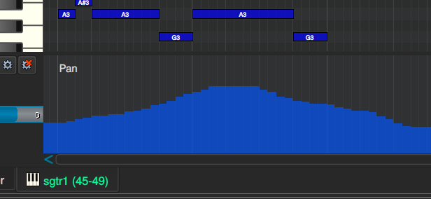

Editing in MusE
Midi editor
The MIDI editor in MusE is a traditional pianoroll type editor that exist in the majority of MIDI editors out there so hopefully you are already accustomed to their workflow.
Basically the editing start with having a midi track and either recording midi unto this track from an external midi keyboard OR creating a midi part by hand using the draw tool (keyboard shortcut D) in the arranger.
When a midi part exists in the arranger you can simply double click on it OR select it and press Ctrl+E to open the pianoroll.

Omitting the channel strip on the far left, the pianoroll consists of three parts, piano keys, canvas and the controller view.
Piano
To the left are the piano keys, a representation of a piano. Clicking on the piano keys plays the relevant note using the midi device connected to this midi track.
Canvas
Next is the canvas which extends lanes from each piano key over the canvas where notes can be placed and edited over the duration of the part.
Actually notes can be placed after the part too and the part will be automatically extended. Events can however not be placed before the part start, in that case the part must be resized in the arranger prior to editing.
Controller view
Finally, at the bottom is the default controller view, which shows Velocity. The controller view can be changed to show any other available controller by clicking on the Select controller button to the left of the view.
If there is space for it, additional controller views can be added from the Display->Add controller view menu alternative.
As in the screenshot above the controller view will show a representation of the controller the view shows, in this case velocity. The events in the view can be changed using the mouse with the Pencil or Draw tool.
In the case of Velocity only the available events can be manipulated, but for most other controllers, for instance Pan, new events can be added with the same procedure.

If you explicitly do not want to add new events but only change existing events while editing, hold down the CTRL key while drawing.
Also you may sometimes want to remove controllers, in that case check out the chapter about the Event editor.
Pianoroll graphical editing
In the pianoroll there are a number of tools on the toolbar for manipulating notes in the pianoroll. They are also listed in the right click menu on the canvas:
Pointer this is the default tool where clicking on parts selects them and clicking and dragging moves parts.
- Pan and Zoom tools are still available and reminders of past without mice with scroll-wheels, which is the recommended way pan and zoom.
- mouse wheel to pan up/down
- shift+mouse wheel to pan left/right
- ctrl+mouse wheel to zoom in/out
The letters to the right of each tool is the currently selected keyboard shortcut.
Keyboard shortcuts in pianoroll
Checkout the chapter about shortcuts for more information here.
Pianoroll toolbar
Add controller view button
Adds a controller view as described in the controller chapter.
Step recording button
Another way to record midi into the pianoroll is with Step recording, available on the Pianoroll tools toolbar.
When checked each click on the Piano will produce a recorded note for the key clicked, the length of the note is derived from the Snap value in the Pos/Snap/Solo-tools toolbar.
Midi input button
if the Midi input button is checked any configured Midi input device will produce the same result as clicking on the Piano.
Play events button
If checked it will play the note being clicked with the mouse. If the dropdown is set to Play Chords all notes will be played when multiple notes are dragged.